拖拽框选截图区域 · 悬停窗口可快速选中 · Enter 完成 · Esc 取消
文字识别结果
自动检测
→
中文
English
日本語
한국어
Français
Deutsch
Español
Русский
复制纯文本
复制 Markdown
预览
表格识别
翻译



颜色
粗细
4px
直线
矩形

箭头
椭圆
像素
模糊

噪点
纯色
笔刷
框选
强度
12
翻译为
中文
English
日本語
한국어
Français
Deutsch
Español
Русский
智能识别
表格识别
#FFFFFF
255, 255, 255
⇕
自动匀速滚动拼接（可关闭改手动）；Enter 完成，Esc 取消
拼接预览
自动滚动：开
完成
取消
3
录制中
00:00
暂停
停止
二维码内容
×
复制
打开链接